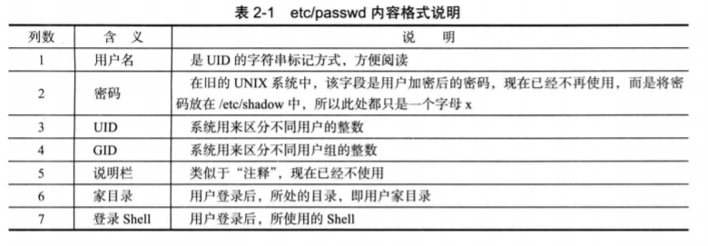
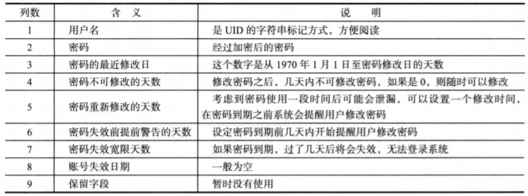

1. 显示日期：date
cch@cch-virtual-machine:~$ date
2019年 09月 20日 星期五 09:59:43 CST加参数
cch@cch-virtual-machine:~$ date +%Y%m%d
201909202、列出目录内容：ls
cch@cch-virtual-machine:~$ ls
electron-ssr-0.2.6 git-rectify monaco.ttf 公共的 图片 音乐
electron-ssr-0.2.6.deb git-rectifyapt-get shadowsocks.json 模板 文档 桌面
electron-ssr-0.2.6.tar.gz monaco-font workspace 视频 下载使用ls命令可以列出当前目录下的内容，加个参数试试
cch@cch-virtual-machine:~$ ls -l
总用量 80492
drwxrwxr-x 4 cch cch 4096 1月 28 2019 electron-ssr-0.2.6
-rw-rw-r-- 1 cch cch 34960592 8月 27 16:33 electron-ssr-0.2.6.deb
-rw-rw-r-- 1 cch cch 47325415 8月 27 16:27 electron-ssr-0.2.6.tar.gz
drwxrwxr-x 4 cch cch 4096 8月 27 17:29 git-rectify
drwxrwxr-x 2 cch cch 4096 8月 27 17:29 git-rectifyapt-get
drwxr-xr-x 3 cch cch 4096 8月 27 10:38 monaco-font
-rw-rw-r-- 1 cch cch 65704 8月 27 10:13 monaco.ttf
-rw-rw-r-- 1 cch cch 146 8月 27 14:34 shadowsocks.json
drwxr-xr-x 3 cch cch 4096 8月 31 11:13 workspace
drwxr-xr-x 2 cch cch 4096 5月 13 22:19 公共的
drwxr-xr-x 2 cch cch 4096 5月 13 22:19 模板
drwxr-xr-x 2 cch cch 4096 5月 13 22:19 视频
drwxr-xr-x 2 cch cch 4096 5月 13 22:19 图片
drwxr-xr-x 2 cch cch 4096 5月 13 22:19 文档
drwxr-xr-x 2 cch cch 4096 5月 13 22:19 下载
drwxr-xr-x 2 cch cch 4096 5月 13 22:19 音乐
drwxr-xr-x 3 cch cch 4096 8月 31 10:59 桌面注意到桌面所在的行的第一个字母是d，这说明它是一个目录
ls -l的作用是详细显示当前目录下的所有文件
如果只是想详细显示其中一个文件，只要加上需要显示的文件就可以了。
cch@cch-virtual-machine:~$ ls -l shadowsocks.json
-rw-rw-r-- 1 cch cch 146 8月 27 14:34 shadowsocks.json3、显示文件内容：cat
test.txt是一个文本文件，cat 显示文件内容
cch@cch-virtual-machine:~$ cat test.txt
hello world!!4、使用 man page
不知道命令ls的使用方法吗？输入 man ls。查看man文件的时候，可以使用
- 上下方向键阅读文件内容
- 空格翻页
- 关键字搜索，比如在
man ls的页面上，输入/time，按回车键，按小写n向下查找，大写N向上查找 - 小写
q结束查看man文件
man -f查询要找的命令存在于哪些man文件中，例如：
cch@cch-virtual-machine:~$ man -f reboot
reboot (8) - Halt, power-off or reboot the machine
reboot (2) - reboot or enable/disable Ctrl-Alt-Del然后可用 man 2 reboot 或者 man 8 reboot来分别查看reboot命令在man文件的第二章和第八章中的解释
5、使用 info page
info 工具是一个基于菜单的超文本系统。输入info ls来显示ls命令的说明文档：
cch@cch-virtual-machine:~$ info ls
Next: dir invocation, Up: Directory listing
10.1 ‘ls’: List directory contents
==================================
The ‘ls’ program lists information about files (of any type, including
directories). Options and file arguments can be intermixed arbitrarily,
as usual.- 空格向下翻页
PageUp上翻页，PageDown下翻页q退出info查询
6、UID和GID
使用 ls -l 查看文件时，第三列和第四列显示的是这个文件的所有者是用户cch，所有组是root组，加上-n参数，第三列和第四列则是用UID和GID来显示，这里分别是1000和1000
cch@cch-virtual-machine:~$ ls -l test.txt
-rw-rw-r-- 1 cch cch 14 9月 20 15:30 test.txt
cch@cch-virtual-machine:~$ ls -ln test.txt
-rw-rw-r-- 1 1000 1000 14 9月 20 15:30 test.txt要确认自己的UID，使用id
cch@cch-virtual-machine:~$ id
uid=1000(cch) gid=1000(cch) 组=1000(cch),4(adm),24(cdrom),27(sudo),30(dip),46(plugdev),116(lpadmin),126(sambashare)要确认自己所属的用户组，使用groups
cch@cch-virtual-machine:~$ groups
cch adm cdrom sudo dip plugdev lpadmin sambashare查询当前在线用户，使用who命令查看登录在系统中的所有用户
cch@cch-virtual-machine:~$ who
cch :0 2019-09-10 17:51 (:0)
cch tty3 2019-09-10 17:54
cch tty5 2019-09-20 09:57
cch pts/0 2019-09-20 15:28 (192.168.3.1)7、/etc/passwd 和 /etc/shadow
前面已经说明，在登录 Linux 时必须要输入用户名和密码。而系统用来记录用户名、密码最重要的两个文件就是/et/passwd和/etclshadow。以下是/etc/passwd中的几行内容:
lrootelocalhost ~]# cat /etc/passwd
root:x:0:0:root:/root:/bin/bash
bin:x:1:1:bin:/bin:/sbin/nologin
daemon:x:2:2:daemon:/sbin:/sbin/nologin
adm:x:3:4:adm:/var/adm:/sbin/nologin
1p:x:4:7:lp:/var/spool/lpd:/sbin/nologin
......略去内容......
从表2-1中可以了解到，/etc/passwd 的第二列最早是在UNIX系统中用于记录密码的，但是这其中存在一一个问题:由于每个用户都需要有读取这个文件的权限，而随着现代密码破解技术的发展，即便是加密的密码，也有被破解的可能，所以将密码从这个文件中剥离出去是非常必要的。
目前Linux的做法是，将密码相关的信息保存到/etc/shadow中，而且默认只有root用
户才有读的权限，其他人完全没有读取这个文件的可能。这种密码保存方式被称为“影子密
码”。看一下/etc/shadow中的第一行内容:
[root@localhost ~]# cat /etc/shadow
root :$1$Jj IvgikC$Yj iVyo3wVahvrwr0IETTV/:15620:0:99999:7:::
......(略去内容) ......与/etc/passwd类似，/etc/shadow 也是由冒号“:”隔开的，不同的是这里是8个冒号隔
开的9列。每一列代表的含义如表所示。

新增用户: useradd
[root@localhost ~]# useradd john输入这条命令后，后台会执行很多对用户来说毫无感知的行为。
首先，系统需要将用户信息记录在/etc/passwd中，一般会在/etc/passwd和/etc/shadow末尾追加一条记录，同时会分配给该用户一个UID。
接着，要为该用户自动创建家目录。家目录以创建的用户名为目录名，创建的路径在/home目录中。比如，在上述案例中,创建的目录将是/home/john。
然后，复制/etc/skel下所有的文件至/home/john。说明-下，如果你使用ls -l /etc/skel命
令查看，可以发现这个目录下“什么都没有”，但事实上,该目录下面有很多隐藏文件，使
用命令ls -la /etc/skel就可以看到其中还是有好几个文件的。
最后，新建一个与该用户名一样的用户组，也就是说当创建用户john的时候，也同时创
建了一个叫john的用户组，而用户john默认属于john用户组(关于用户组的概念将在下一
节中讲到)。
这里需要对/etc/skel目录做一些说明。 系统在添加用户时，需要预先为这个用户创建一些默认的“配置文件”，而默认配置的就是/etc/skel目录下的几个隐藏文件。可以说，/etc/skel实际上是创建用户时的“模板”。
做一个小实验，实验过程如下所示:
lroot@localhost ~]# cd /etc/skel/
I root@localhost skel]# touch TempFile
lroot@localhost skel]# useradd john01
[root@localhost skel]# cd /home/john01/
[root@localhost john]# 1s -1
total 0
-rw-r--r-- 1 john john 0 0ct 25 23:41 TempFile也就是说，手工在/etc/skel中创建-一个 文件TempPile ( touch命令就是创建文件的命令)，
然后再添加用户john0l时，在家目录/home/john01中也会同样发现这个文件。这说明其实在
创建用户后，会将/ete/skel中的所有文件直接复制过来。
-u 参数指定新创建用户的UID
[root@localhost skel]# useradd -u 555 userl-g 参数指定GID
[root@localhost skel]# useradd -g user1 user2-d 参数指定该用户的家目录
[root@localhost skel]# useradd -d /home/mydir3 user3修改密码：passwd
刚创建用户后，用户实际上没有登录系统的权限，因为在不设置密码的情况下，在/
etc/shadow中该用户记录中以冒号分隔的第二列将显示为两个感叹号“! !”，这说明不允许
该用户登录系统。因此，需要同时设置用户的密码才行，设置命令是passwd后接用户名，
[root@localhost skel]# passwd john
Changing password for user john.
New UNIX password:
Retype new UNIX password:
passwd: all authentication tokens updated successfully.普通用户也可以使用passwd来修改自已的密码，但是需要提供当前用户的密码才可以,
并且密码不能太过简单，因为系统会拒绝普通用户设置过于简单的密码。命令如下所示:
[john@localhost ~]$ passwd
Changing password for user john.
Changing password for john
(current) UNIX password:
New UNIX password:
Retype new UNIX password:
passwd: all authentication tokens updated successfully.与root用户使用这个命令的方式不同，普通用户在运行这个命令时，后面不能跟参数，
哪怕是自已的用户名也不行。比如说使用john登录，然后采用passwd john命令,系统就会
立刻报错，提示只有root用户才可以在后面跟上用户名，如下所示:
[john@localhost ~]$ passwd john
passwd: Only root can specify a user name.修改用户: usermod
-d 参数修改用户家目录，这里加上 -m 参数，如果指定用户的家目录存在，就自动创建新目录/home/alice_new，并使用该目录作为alice的新家目录。如果没有这个参数，系统会报一个错误：usermod: user /home/alice new does not exist
[root@localhost ~]# usermod -d /home/alice new -m alice-L 参数冻结用户
[root@localhost ~]# usermod -L alice-U 参数解锁冻结用户
[root@localhost ~]# usermod -U aliceusermod 命令就是对/etc/passwd和/etc/shadow文件做一些修改而已
删除用户：userdel
[root@localhost ~]# userdel alice默认情况下，删除用户时并不会删除原来用户的家目录和邮件信息。可以使用-r参数同时删除用户家目录和该用户的邮件。一旦执行了这条命令，该用户的相关文件就会全被删除。
增加用户组：groupadd
[root@localhost ~]# groupadd group1按回车键后，注意看/etc/group的最后-行,在本例中，添加的用户组groupl的GID为 503。
[root@localhost ~]# cat /etc/group
...... (略去内容)......
groupl :x:503:在/etc/group文件中，每行就代表一个用户组，其格式是使用3个分隔号“:”隔开的
4列。第一列是用户组名，第二列代表密码(但是并不使用),第三列代表用户组的数字ID,
第四列是组成员，这里为空说明还没有任何用户属于这个组。
删除用户组：groupdel
如果已有用户属于这个试图删除的组，该操作就会失败
[rootelocalhost ~] # groupdel group1查看用户：users、who、w
[root@localhost ~]# users
root root
lroot@localhost ~]# who
root :
tty1
2012-11-01 23:00
pts/0
2012-11-01 22:56 (192.168.179.1)命令显示的结果有3列，第一列是登录用户的用户名，第二列是用户登录的终端，第三
列是用户登录的时间。如果是通过远程网络登录，则同时会显示远程主机的主机名或IP地
址。还可以使用命令w看到更详细的信息，如下所示:
cch@cch-virtual-machine:~$ w
17:47:25 up 3:26, 4 users, load average: 0.29, 0.16, 0.06
USER TTY 来自 LOGIN@ IDLE JCPU PCPU WHAT
cch :0 :0 四18 ?xdm? 1:12 0.00s /usr/lib/gdm3/gdm-x-session --run-script env GNO
cch pts/1 192.168.3.1 16:10 1:36m 0.03s 0.02s sshd: cch [priv]
cch pts/2 192.168.3.1 17:39 6:11 0.06s 0.06s -bash
cch pts/3 192.168.3.1 17:47 2.00s 0.02s 0.01s wv命令的第一行会显示当前时间、系统运行时间、已登录的用户数量和系统负载。下面
显示的信息分为8列，每一-列解释如下。
第一列:登录用户的用户名。
第二列:用户登录终端。
第三列:如果用户从网络登录，则显示远程主机的主机名或IP地址。
第四列:用户登录时间。
第五列:用户闲置时间。
第六列:与终端相关的当前所有运行进程消耗的CPU时间总量。
第七列:当前WHAT列所对应的进程所消耗的CPU时间总量。
第八列:用户当前运行的进程。
关于系统负载的解释可以阅读这篇文章：http://www.ruanyifeng.com/blog/2011/07/linux_load_average_explained.html
调查用户：finger
不加参数的情况下，会显示系统的登录用户
root@cch-virtual-machine:/home/cch# finger
Login Name Tty Idle Login Time Office Office Phone
cch cch *:0 Sep 26 18:08 (:0)
cch cch pts/1 1:48 Sep 27 16:10 (192.168.3.1)
cch cch pts/2 18 Sep 27 17:39 (192.168.3.1)
cch cch pts/3 Sep 27 17:47 (192.168.3.1)跟上某个用户名，则显示该用户更详细的信息
root@cch-virtual-machine:/home/cch# finger cch
Login: cch Name: cch
Directory: /home/cch Shell: /bin/bash
On since Thu Sep 26 18:08 (CST) on :0 from :0 (messages off)
On since Fri Sep 27 16:10 (CST) on pts/1 from 192.168.3.1
1 hour 50 minutes idle
On since Fri Sep 27 17:39 (CST) on pts/2 from 192.168.3.1
19 minutes 39 seconds idle
On since Fri Sep 27 17:47 (CST) on pts/3 from 192.168.3.1
3 seconds idle
No mail.
No Plan.
# 显示用户最近一次登录到系统中的时间
# 显示邮件信息
# 显示计划信息